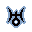

On the Subject of Syzygy
Mixing up astrology and astronomy will either give you a bad omen or a bad reputation.
- Each of the eleven tiles will have a unique astrological symbol corresponding to the astral bodies of our solar system.
- You may select any two blue tiles to swap their positions. White tiles are locked and cannot be moved around.
- Align all eleven tiles such that all conditions that correspond to each symbol are satisfied. Use the table below to reference the symbols to their corresponding conditions.
| If the last digit of the serial is: | |||
| Even | Odd | ||
| Sol | Must be adjacent to a locked tile or locked itself. | Must be the leftmost tile. | |
| Mercurius | Must be equally spaced between Venus and Jupiter. | Must not be adjacent to Uranus, Terra, or Luna. | |
| Venus | Must have exactly one tile between itself and Mars. | Must be between Pluto and Saturnus. | |
| Terra | Must be the center-most tile. | Must be left of Neptunus or right of the rightmost locked tile. | |
| Luna | Must be directly adjacent to Terra. | Must be exactly two tiles away from Venus. | |
| Mars | Must be adjacent to either Pluto or Saturnus. | Must not be directly adjacent to either Terra or Sol. | |
| Jupiter | Must either be adjacent to Sol, or have one tile between itself and Neptunus. | Must be diametrically opposite from Venus. | |
| Saturnus | Must be right of Mars and not directly adjacent to a locked tile. | Must be adjacent to either Jupiter or Sol, and not adjacent to neither Terra nor Mercurius. | |
| Uranus |  | Must be left of Mercurius. | Must be between Pluto and Luna, and right of Terra. |
| Neptunus | Can be adjacent to anything. | Must be placed on the right half. | |
| Pluto | Must be placed on the left half. | Must either be adjacent to Venus, or be right of Uranus. | |